DublinR - Machine Learning 101
Introduction with Examples
Eoin Brazil - https://github.com/braz/DublinR-ML-treesandforests
Machine Learning Techniques in R
A bit of context around ML
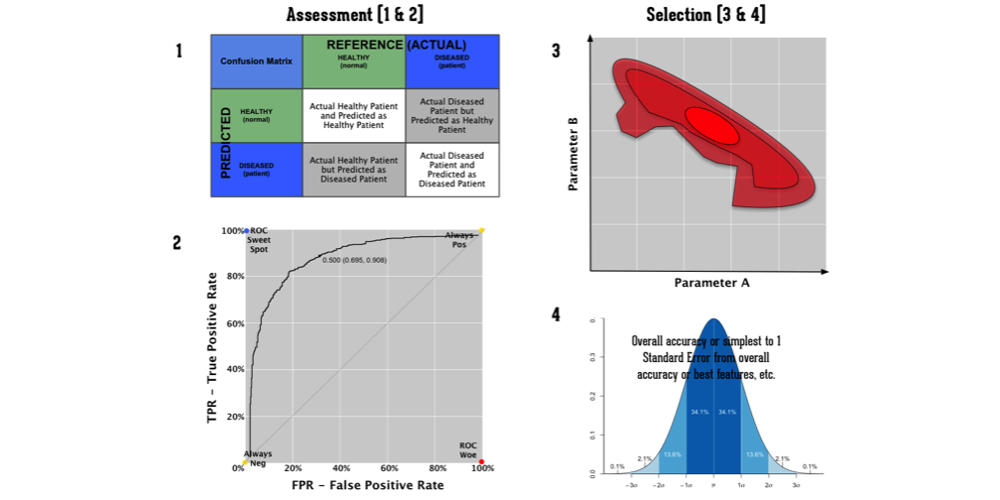
Model Selection and Model Assessment
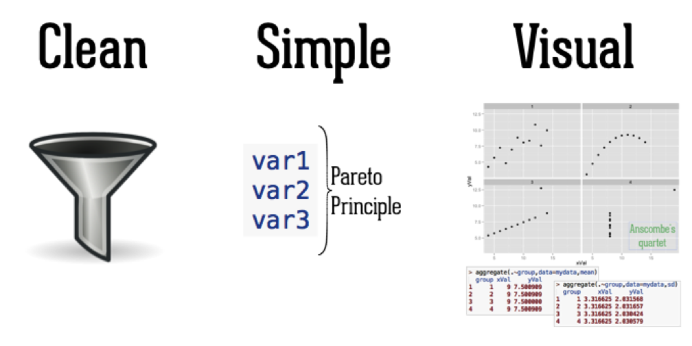
Model Choice - Move from Adaptability to Simplicity
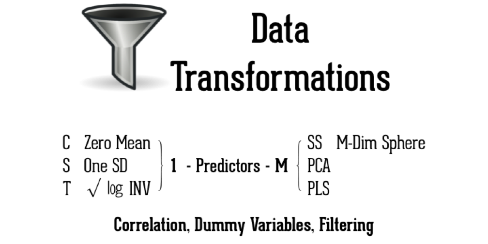
Interpreting A Confusion Matrix
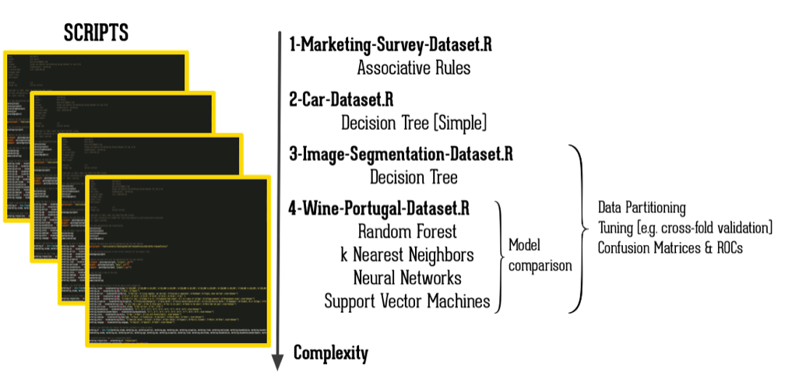
- TPR or True Positive Rate = TP / Pos = TP/TP+FN
- FPR or False Positive Rate = FP / Neg = FP/FP+TN
- ACC or Accuracy = Pos * TPR + Neg * (1-FPR), This is the weighted average of true positive and true negative rates
Interpreting A ROC Plot
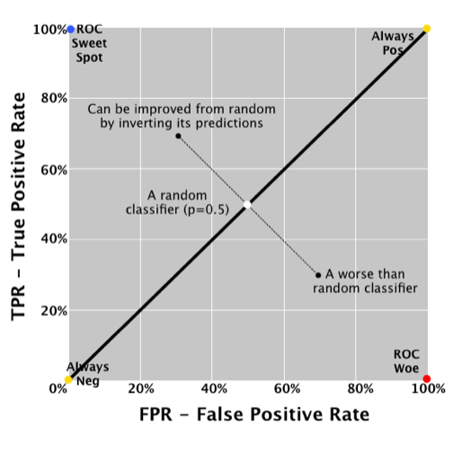
- A point in this plot is better than another if it is to the northwest (TPR higher / FPR lower / or both)
- ``Conservatives'' - on LHS and near the X-axis - only make positive classification with strong evidence and making few FP errors but low TP rates
- ``Liberals'' - on upper RHS - make positive classifications with weak evidence so nearly all positives identified however high FP rates
Addressing Prediction Error
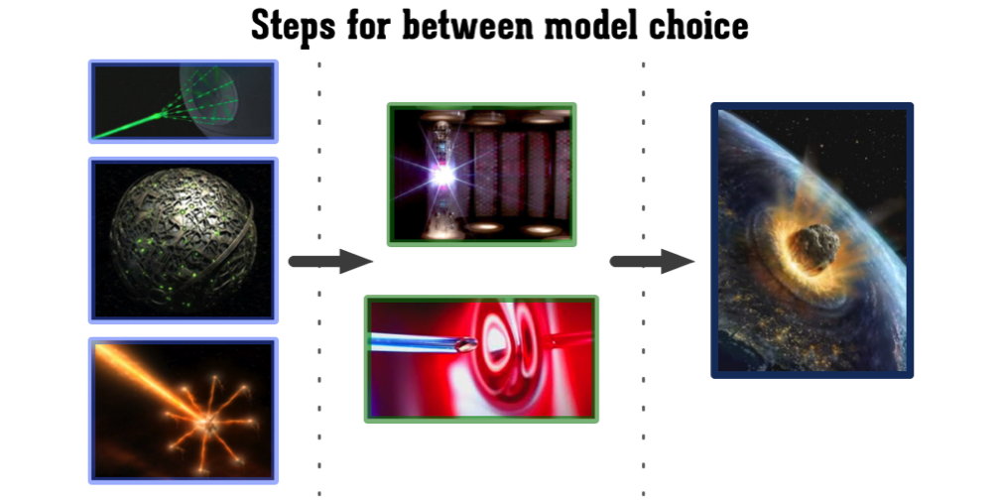
- K-fold Cross-Validation (e.g. 10-fold)
- Allows for averaging the error across the models
- Bootstrapping, draw B random samples with replacement from data set to create B bootstrapped data sets with same size as original. These are used as training sets with the original used as the test set.
- Other variations on above:
- Repeated cross validation
- The '.632' bootstrap
Addressing Feature Selection

Kaggle - using ML for fun & profit
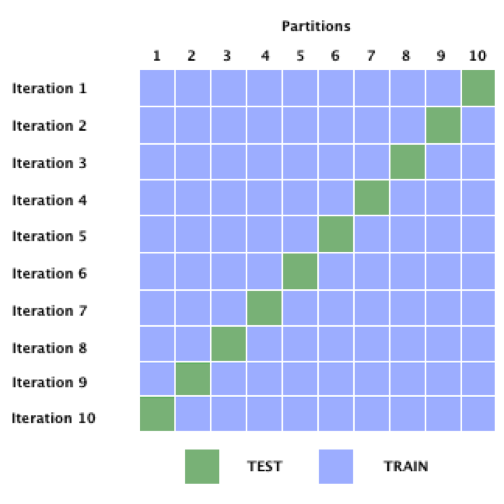
Nuts & Bolts - Data sets and Techniques
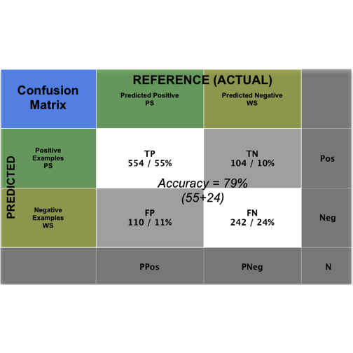
Associative rule learning
Discovery of interesting relations between variables in large databases. It is intended to identify strong rules discovered in databases using different measures of interestingness
Apriori algorithm, which supports pruning of candidate rules to systematically control the exponential growth that occurs with this approach
The algorithm finds subsets which are common with at least a minimum number of X of the itemsets and checks the frequent subsets and extends them one item at a time to find candidate rules which are then tested against the data
Uses of association analysis
- Sales patterns (Promotions vs. Sales, Direct Marketing / Geographical, Seasonal Differences)
- Cross-selling
- Extend it with time aspects to do longitudinal / sequential pattern analysis
Aside - How does associative analysis work ?
What are they good for ?
Marketing Survey Data - Part 1
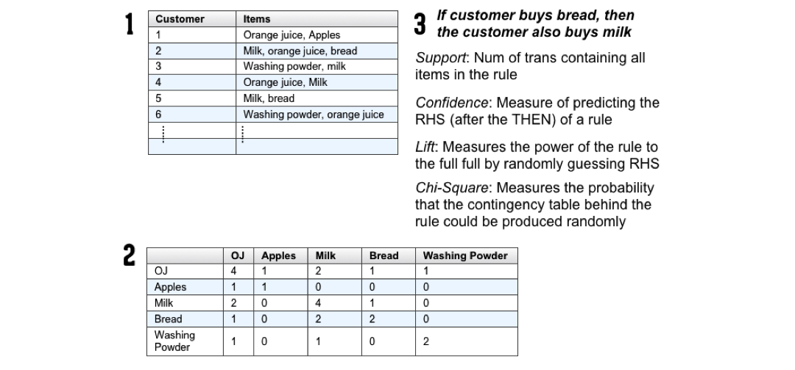
Marketing Survey Data - Part 2
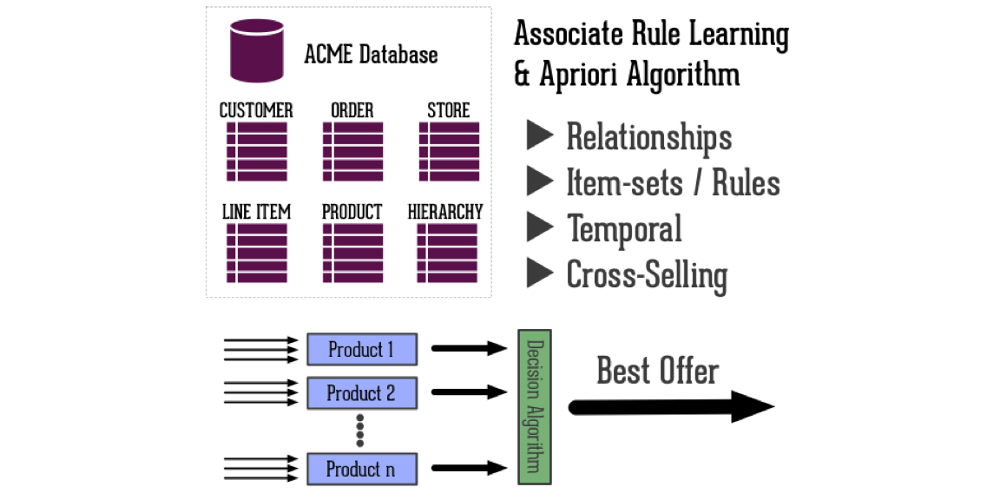
Aside - How do decision trees work ?
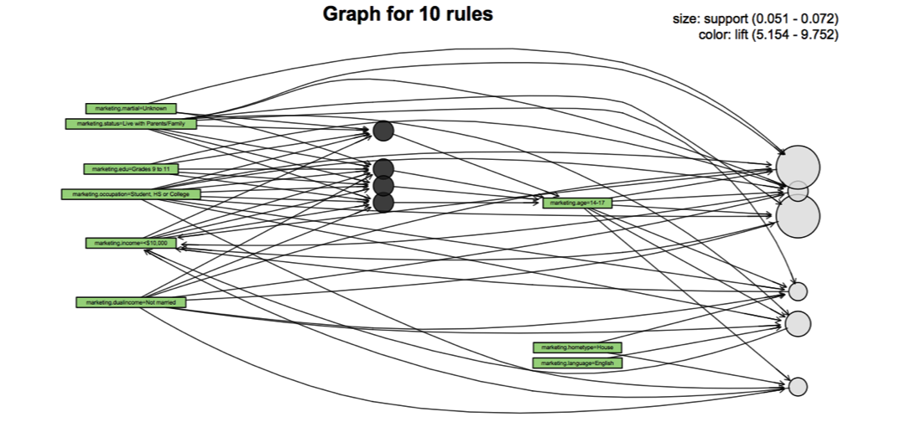
What are they good for ?
Car Insurance Policy Exposure Management - Part 1
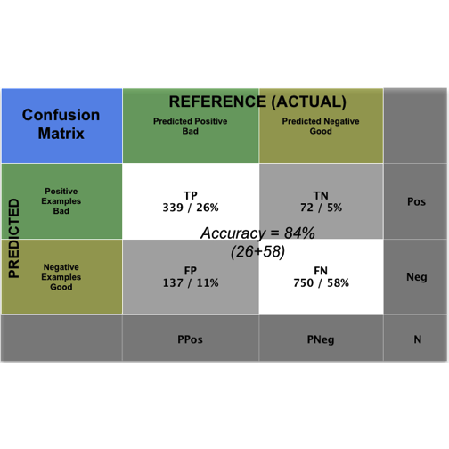
- Analysing insurance claim details of 67856 policies taken out in 2004 and 2005.
- The model maps each record into one of X mutually exclusive terminal nodes or groups.
- These groups are represented by their average response, where the node number is treated as the data group.
- The binary claim indicator uses 6 variables to determine a probability estimate for each terminal node determine if a insurance policyholder will claim on their policy.
Car Insurance Policy Exposure Management - Part 2
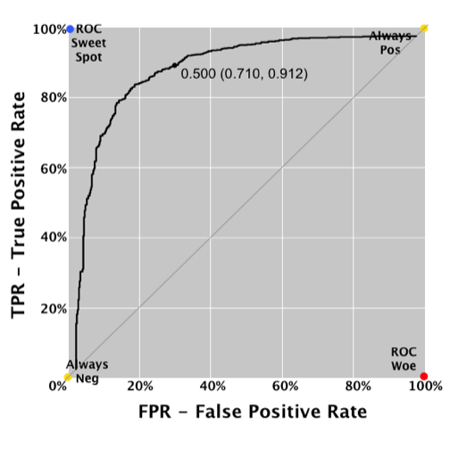
- Root node, splits the data set on 'agecat'
- Younger drivers to the left (1-8) and older drivers (9-11) to right
- N9 splits on basis of vehicle value
- N10 <= $28.9k giving 15k records and 5.4% of claims
- N11 > $28.9k+ giving 1.9k records and 8.5% of claims
- Left Split from Root, N2 splits on vehicle body type, on age (N4), then on vehicle value (N6)
- The n value = num of overall population and the y value = probability of claim from a driver in that group
What are they good for ?
Cancer Research Screening - Part 1
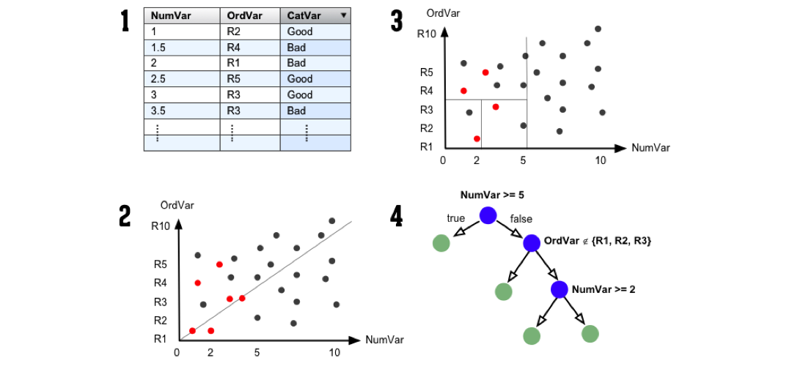
- Hill et al (2007), models how well cells within an image are segmented, 61 vars with 2019 obs (Training = 1009 & Test = 1010).
- "Impact of image segmentation on high-content screening data quality for SK-BR-3 cells, Andrew A Hill, Peter LaPan, Yizheng Li and Steve Haney, BMC Bioinformatics 2007, 8:340".
- b, Well-Segmented (WS)
- c, WS (e.g. complete nucleus and cytoplasmic region)
- d, Poorly-Segmented (PS)
- e, PS (e.g. partial match/es)
Cancer Research Screening - Part 2
"prp(rpartTune$finalModel)"

"fancyRpartPlot(rpartTune$finalModel)"
Cancer Research Screening - Part 3


What are they good for ?
Predicting the Quality of Wine - Part 1
- Cortez et al (2009), models the quality of wines (Vinho Verde), 14 vars with 4898 obs (Training = 5199 & Test = 1298).
- "Modeling wine preferences by data mining from physicochemical properties, P. Cortez, A. Cerdeira, F. Almeida, T. Matos and J. Reis, Decision Support Systems 2009, 47(4):547-553".
- Good (quality score is >= 6)
- Bad (quality score is < 6)
##
## Bad Good
## 476 822
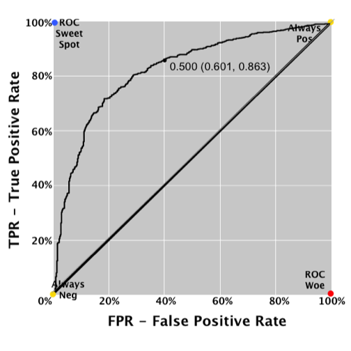
Predicting the Quality of Wine - Part 2
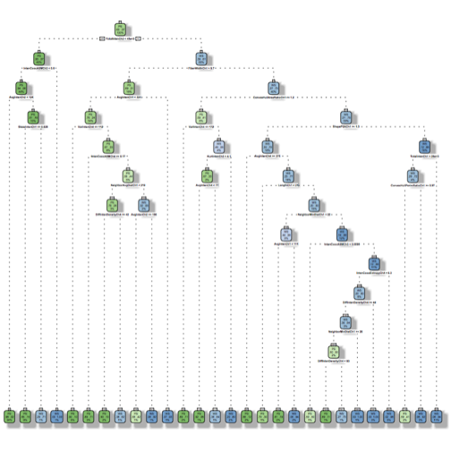
Predicting the Quality of Wine - Part 3
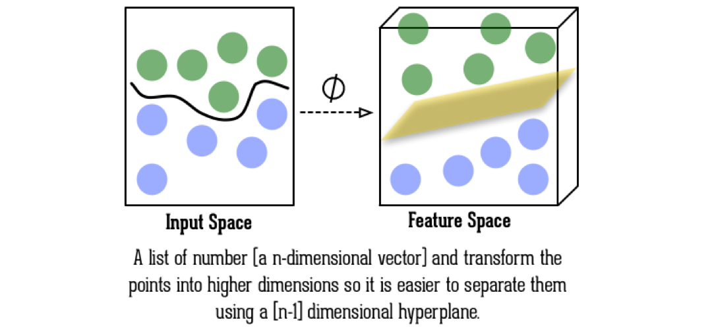

Predicting the Quality of Wine - Part 4 - Problems with Trees
- Deal with irrelevant inputs
- No data preprocessing required
- Scalable computation (fast to build)
- Tolerant with missing values (little loss of accuracy)
- Only a few tunable parameters (easy to learn)
- Allows for human understandable graphic representation
- Data fragmentation for high-dimensional sparse data set (over-fitting)
- Difficult to fit to a trend / piece-wise constant model
- Highly influenced by changes to the data set and local optima (deep trees might be questionable as the errors propagate down)
Aside - How does a random forest work ?
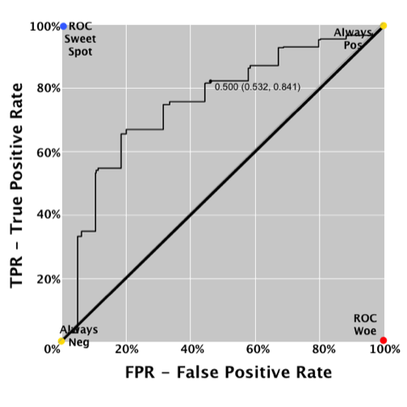
Predicting the Quality of Wine - Part 5 - Random Forest

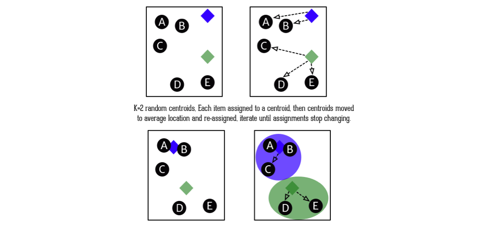
Predicting the Quality of Wine - Part 6 - Other ML methods
- K-nearest neighbors
- Unsupervised learning / non-target based learning
- Distance matrix / cluster analysis using Euclidean distances.
- Neural Nets
- Looking at basic feed forward simple 3-layer network (input, 'processing', output)
- Each node / neuron is a set of numerical parameters / weights tuned by the learning algorithm used
- Support Vector Machines
- Supervised learning
- non-probabilistic binary linear classifier / nonlinear classifiers by applying the kernel trick
- constructs a hyper-plane/s in a high-dimensional space
Aside - How does k nearest neighbors work ?
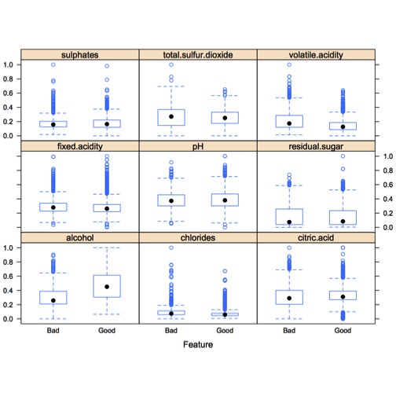
Predicting the Quality of Wine - Part 7 - kNN
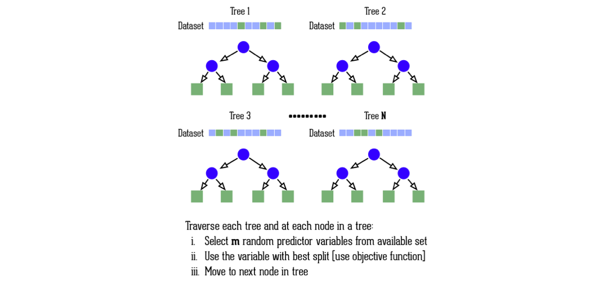
Aside - How do neural networks work ?

Predicting the Quality of Wine - Part 8 - NNET


Aside - How do support vector machines work ?
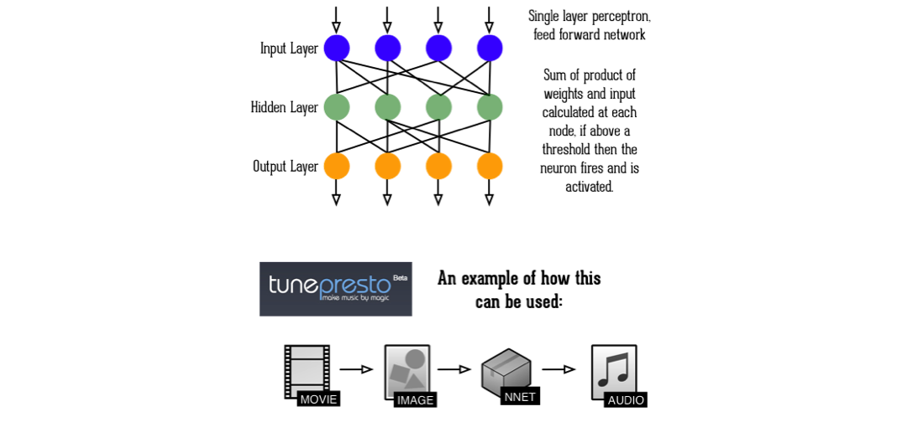
Predicting the Quality of Wine - Part 9 - SVN

Predicting the Quality of Wine - Part 10 - All Results

What are they not good for ?
Predicting the Extramarital Affairs
- Fair, R.C. et al (1978), models the possibility of affairs, 9 vars with 601 obs (Training = 481 & Test = 120).
- "A Theory of Extramarital Affairs, Fair, R.C., Journal of Political Economy 1978, 86:45-61".
- Yes (affairs is >= 1 in last 6 months)
- No (affairs is < 1 in last 6 months)
## Loading required package: car Loading
## required package: Formula Loading
## required package: lmtest Loading
## required package: zoo
##
## Attaching package: 'zoo'
##
## The following object is masked from
## 'package:base':
##
## as.Date, as.Date.numeric
##
## Loading required package: sandwich
## Loading required package: strucchange
## Loading required package: survival
## Loading required package: splines
## Loading required package: seriation
## Loading required package: cluster
## Loading required package: TSP Loading
## required package: gclus Loading
## required package: colorspace Loading
## required package: foreach foreach:
## simple, scalable parallel programming
## from Revolution Analytics Use
## Revolution R for scalability, fault
## tolerance and more.
## http://www.revolutionanalytics.com
## Loading required package: lattice
##
## Attaching package: 'lattice'
##
## The following object is masked from
## 'package:seriation':
##
## panel.lines
##
## Loading required package: plyr
##
## Attaching package: 'plyr'
##
## The following object is masked from
## 'package:corrgram':
##
## baseball
##
## Loading required package: reshape2
## randomForest 4.6-7 Type rfNews() to see
## new features/changes/bug fixes. Loading
## required package: MASS
##
## No Yes
## 90 30

Predicting the Extramarital Affairs - RF & NB
Random Forest
## Loading required package: class
## Reference
## Prediction No Yes
## No 90 30
## Yes 0 0
## Accuracy
## 0.75
Naive Bayes
## Reference
## Prediction No Yes
## No 88 29
## Yes 2 1
## Accuracy
## 0.75
Other related tools: OpenRefine (formerly Google Refine) / Rattle

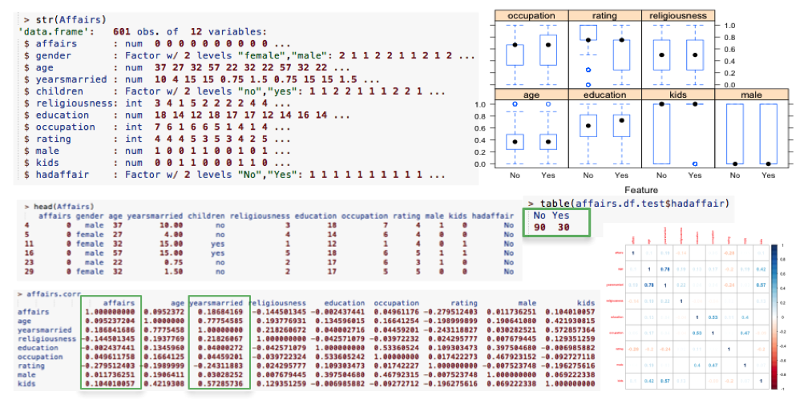
Other related tools: Command Line Utilities
- http://www.gregreda.com/2013/07/15/unix-commands-for-data-science/
- sed / awk
- head / tail
- wc (word count)
- grep
- sort / uniq
- http://blog.comsysto.com/2013/04/25/data-analysis-with-the-unix-shell/
- join
- Gnuplot
- http://jeroenjanssens.com/2013/09/19/seven-command-line-tools-for-data-science.html
- http://csvkit.readthedocs.org/en/latest/
- https://github.com/jehiah/json2csv
- http://stedolan.github.io/jq/
- https://github.com/jeroenjanssens/data-science-toolbox/blob/master/sample
- https://github.com/bitly/data_hacks
- https://github.com/jeroenjanssens/data-science-toolbox/blob/master/Rio
- https://github.com/parmentf/xml2json
A (incomplete) tour of the packages in R
- caret
- party
- rpart
- rpart.plot
- AppliedPredictiveModeling
- randomForest
- corrplot
- arules
- arulesViz
- C50
- pROC
- corrplot
- kernlab
- rattle
- RColorBrewer
- corrgram
- ElemStatLearn
- car